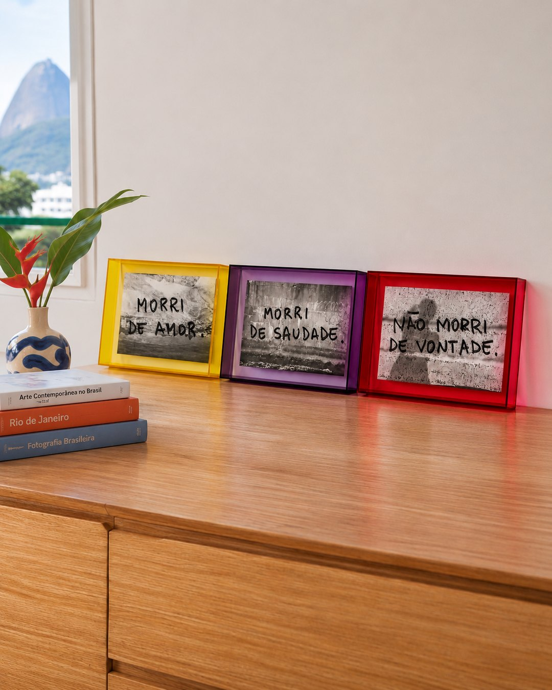
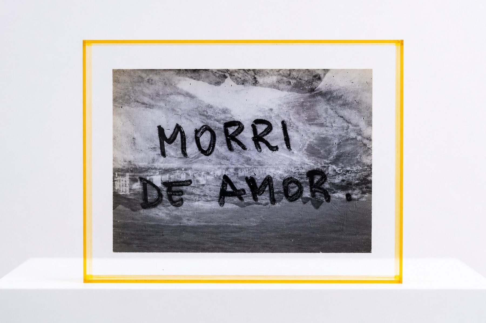
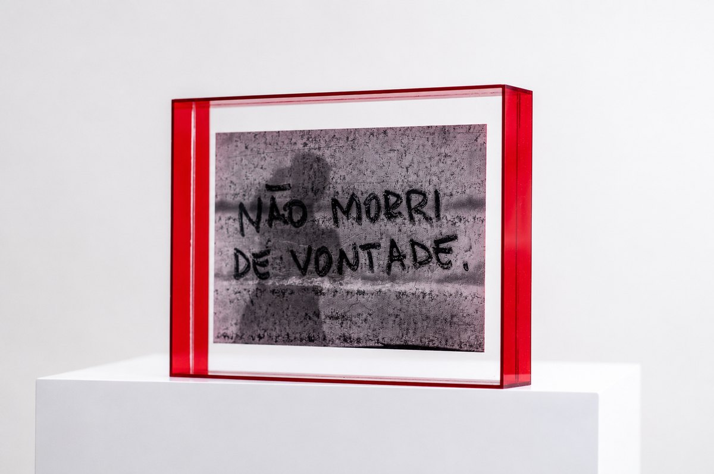
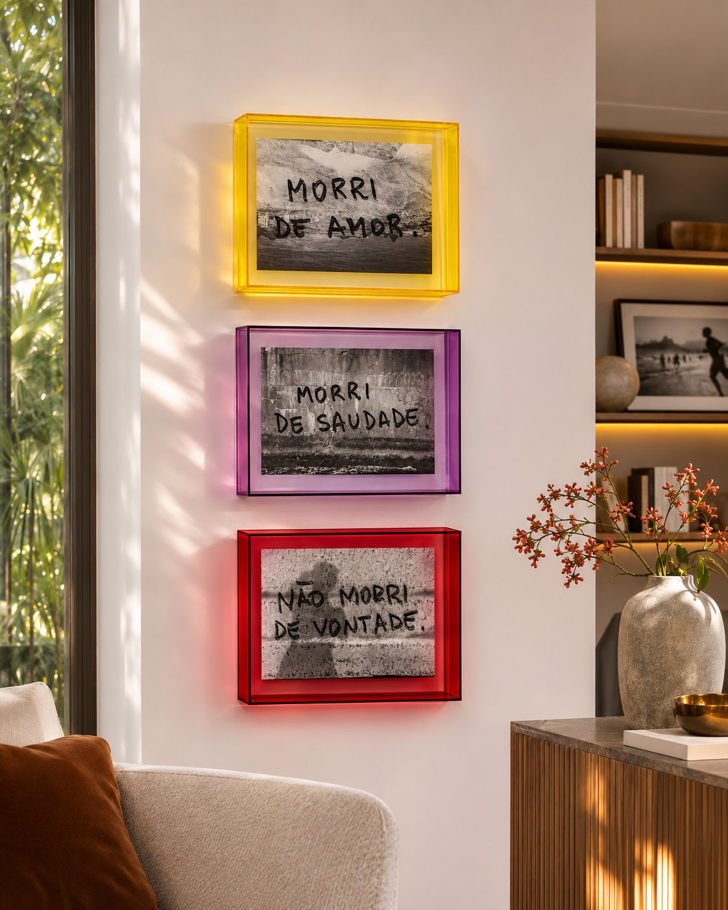

Dani Justus
Morri de Amor, Morri de Saudade, Não Morri de Vontade.

Três fotografias analógicas da série Cartas ao Mar, montadas em acrílico. Edição assinada, com certificado de autenticidade.
As três obras juntas
R$ 1.770,00
R$ 1.490,00
Pix ou até 3x no cartão. Frete de R$ 120 para todo o Brasil.
Ou escolha uma
R$ 590 cada, edição assinada. Frete de R$ 50 para todo o Brasil.

Morri de Amor
Acrílico amarelo
Fotografia analógica impressa em papel Hahnemühle e montada em acrílico.
Fotografia: 15 × 21 cm
Acrílico: 19 × 25 cm
R$ 590,00
+ R$ 50 de frete para todo o Brasil

Morri de Saudade
Acrílico violeta
Fotografia analógica impressa em papel Hahnemühle e montada em acrílico.
Fotografia: 15 × 21 cm
Acrílico: 19 × 25 cm
R$ 590,00
+ R$ 50 de frete para todo o Brasil

Não Morri de Vontade
Acrílico vermelho
Fotografia analógica impressa em papel Hahnemühle e montada em acrílico.
Fotografia: 15 × 21 cm
Acrílico: 19 × 25 cm
R$ 590,00
+ R$ 50 de frete para todo o Brasil
Em casa


Cartas ao Mar
Morri de Amor, Morri de Saudade, Não Morri de Vontade faz parte da série Cartas ao Mar e nasce da urgência de se manifestar. De um desejo persistente de expressão que encontra na fotografia um lugar possível, que vai além do registro e encontra a invenção.
Aqui a artista interfere no processo analógico: escreve no negativo, sobrepõe tempos, criando múltiplas exposições que se costuram como manifestos. O mar e o Rio aparecem como destino simbólico dessas cartas.
As três fotografias foram feitas com uma câmera de fole da década de 1950, utilizando filmes preto e branco. As frases foram escritas sobre um pedaço de acetato e instaladas dentro da própria câmera, para que a luz registrasse, ao mesmo tempo, a paisagem e as palavras sobre o mesmo negativo. Todo esse processo foi realizado de forma inteiramente analógica.
Depois de uma primeira montagem com as três fotografias num único acrílico, em 2024, cada uma ganha agora a sua própria caixa, em amarelo, violeta e vermelho.

Tríptico
As três obras juntas
R$ 1.770,00
R$ 1.490,00
+ R$ 120 de frete para todo o Brasil

Dani Justus
Fotógrafa brasileira, baseada no Rio de Janeiro, com mais de duas décadas de atuação profissional.
Sua pesquisa mergulha nos processos analógicos e na investigação da interrupção do tempo. Seu trabalho nasce do gesto de fotografar sem pré-visualização, aceitando o destino da imagem que só se revela a posteriori.
Utilizando câmeras antigas, filmes vencidos, múltiplas exposições e processos experimentais, a artista incorpora o erro, o acaso e as instabilidades do material como partes indissociáveis da obra.
Na produção atual de Dani, fotografar é o ato de desacelerar o tempo e aceitar, com todas as suas nuances e ruídos, aquilo que permanece.
Autenticidade
Cada obra vai assinada e com certificado de autenticidade.
Pagamento
Pix ou cartão de crédito, em até 3 vezes, pelo Mercado Pago.
Produção e entrega
Cada peça é montada sob encomenda. Produção em até 10 dias úteis + prazo de entrega dos Correios. Frete fixo para todo o Brasil: R$ 50 por obra, R$ 120 no tríptico.